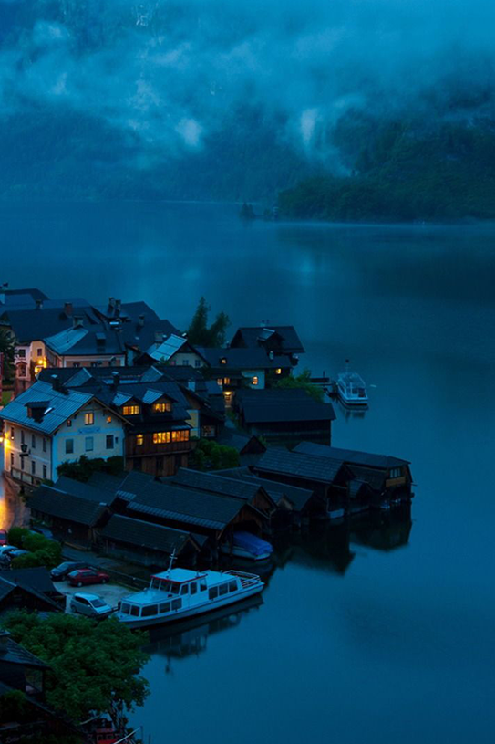

내셔널지오그래픽협회는 탐험과 환경 보호를 통해 지구와 인류에 공헌하고 있는 세계 최대의 비영리 단체입니다. 매년 전세계의 수많은 연구와 환경 보호 프로젝트를 지원하고 있으며, 다방면의 교육 캠페인 등을 통해 미래 세대에게 영감과 비전을 심어주고 있습니다.
About Us
내셔널지오그래픽은 모든 수익의 27%는 내셔널지오그래픽 협회의 과학 및 탐험 프로젝트, 환경보호에 지원됩니다. TV를 시청하고, 매거진을 구독하고, 제품을 구입하는 것은 단순한 소비를 넘어 내셔널지오그래픽의 지구와 인류를 위한 여정을 함께하는 것 입니다.
더보기
채널
어패럴
탐험
매거진
BRAND
- 

CHANNEL
상어떼의 습격을 받은 혹등고래
백상아리 ‘헬렌’이 이동 중인 혹등고래 무리를 뒤쫓습니다.
세계에서 가장 큰 백상아리보다 3배 더 크고, 30배 더 무거운 혹등고래를 상어가 사냥할 수 있을까요?
Shark vs. Whale | 상어 vs 고래 자세히 보기
세계에서 가장 큰 백상아리보다 3배 더 크고, 30배 더 무거운 혹등고래를 상어가 사냥할 수 있을까요?
Shark vs. Whale | 상어 vs 고래 자세히 보기
나무 위에서 사냥하는 동물, 표범
주로 나무 위에서 생활하는 표범은 나무와 나뭇잎 사이에 자신의 몸을 숨기는 닌자 기술을 터득했습니다.
또한 부드러운 부드러운 발로 기척을 숨기죠. 표범은 동물 중의 완벽한 닌자라고 할 수 있습니다.
Jumgping like Ninja | 닌자 표범 자세히 보기
또한 부드러운 부드러운 발로 기척을 숨기죠. 표범은 동물 중의 완벽한 닌자라고 할 수 있습니다.
Jumgping like Ninja | 닌자 표범 자세히 보기
우주비행사들이 말하는 놀라운 '오로라' 목격담
백보통 지구 자기장은 눈으로 확인하기 어렵습니다. 하지만 우주에 있다면 상황은 달라지죠. 우주 위에서 지구를 바라보면,
태양으로부터 우리를 보호하는 활동을 확인할 수 있습니다. 오로라의 움직임이 태양의 방사선을 막는 현상이라는 사실이 우리에게 감동을 줍니다.
One Strange Rock | 지구, 경이로운 행성 자세히 보기
태양으로부터 우리를 보호하는 활동을 확인할 수 있습니다. 오로라의 움직임이 태양의 방사선을 막는 현상이라는 사실이 우리에게 감동을 줍니다.
One Strange Rock | 지구, 경이로운 행성 자세히 보기
못생긴 유충의 놀라운 변화
특이한 입을 가진 이 수중 생물은 여러 번의 허물을 벗으며 성장합니다.
총 15번의 허물을 벗는 과정을 거치죠.
어느 시기가 되면 이 유충은 수중에서 생활할 수 없게 되는데, 물 밖으로 나가 마지막 허물을 벗게 되면 잠자리로 거듭나게 됩니다.
Animal Fight Club V | 와일드 파이트 클럽 V 자세히 보기
어느 시기가 되면 이 유충은 수중에서 생활할 수 없게 되는데, 물 밖으로 나가 마지막 허물을 벗게 되면 잠자리로 거듭나게 됩니다.
Animal Fight Club V | 와일드 파이트 클럽 V 자세히 보기
VIDEO


NEWS
News
 맨몸으로 절벽을 오르는 등반가, 알렉스 호놀드의'프리솔로'
지난 25일 미국 로스엔젤레스에서 열린 제 19회 아카데미 시상식에서 ‘장편 다큐멘터리 상’을 받은 내셔널지오그래픽의 '프리 솔로'가 4월, 내셔널지오그래픽 채널로 찾아온다. 다큐멘터리 부문에서 아카데미 수상을 한 산악영화는 '프리솔로'가 처음이다.영화의 제목이자 알렉스 호놀드(33세)가 도전한 ‘프리솔로’란, 로프나 어떠한 보호 장구 없이 맨몸으로 산을 오르는 것을 뜻한다. 등반가 알렉스는 오로지 자신의 손끝과 신발의 마찰력에 의지한 채 1000m에 달하는 높이의 암벽을 오른다.
맨몸으로 절벽을 오르는 등반가, 알렉스 호놀드의'프리솔로'
지난 25일 미국 로스엔젤레스에서 열린 제 19회 아카데미 시상식에서 ‘장편 다큐멘터리 상’을 받은 내셔널지오그래픽의 '프리 솔로'가 4월, 내셔널지오그래픽 채널로 찾아온다. 다큐멘터리 부문에서 아카데미 수상을 한 산악영화는 '프리솔로'가 처음이다.영화의 제목이자 알렉스 호놀드(33세)가 도전한 ‘프리솔로’란, 로프나 어떠한 보호 장구 없이 맨몸으로 산을 오르는 것을 뜻한다. 등반가 알렉스는 오로지 자신의 손끝과 신발의 마찰력에 의지한 채 1000m에 달하는 높이의 암벽을 오른다.
인류의 새로운 시작, 그 두번째 이야기
지난 시즌에 이어 이번 시즌에도 테슬라모터스 및 스페이스엑스의 CEO인 일론 머스크를 비롯하여 영화 ‘마션’의 원작 소설가 앤디 위어 등 각계 세계 최고 수준의 전문가들이 대거 자문위원으로 참여하여 작품의 완성도를 한껏 끌어 올렸다. 한때는 공상 과학 소설의 일부로 여겨졌던 인류의 화성 정착은, 내셔널지오그래픽의 '마스(MARS)' 시리즈와 함께 한발짝 더 현실로 다가오게 되었다.
일회용 플라스틱 사용 줄이기 캠페인!
첫 번째 놀라운 사실! 전세계적으로 이미 5조개가 넘는 플라스틱 조각들이 우리의 바다를 떠돌고 있습니다. 두 번째 놀라운 사실! 전세계적으로 해변에 버려지는 쓰레기의 73%가 병뚜껑, 플라스틱 병, 비닐봉지 등 플라스틱 제품입니다. 세 번째 놀라운 사실, 1950년대 230만톤 생산되던 플라스틱 제품은 그 생산량이 기하급수적으로 늘어나 1993년에는 1억6천2백만톤 2015년에는 무려 4억4천8백만톤이 생산 되었습니다.